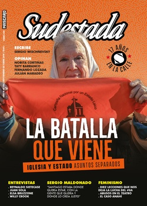

Buscar
"No existe la adultez, sino infancias en pausa"
Es uno de los escritores más leídos fuera del mercado literario. Es un narrador que utiliza la emoción como herramienta y como puente con sus lectores. Pero además, es un artista sensible y comprometido con la realidad que, en esta charla con Sudestada, abre la ventana a sus inquietudes y obsesiones.
Edición N° 154
Septiembre-Octubre 2018
Revista bimensual
Comprar edición impresaSumario
- La batalla que viene. Iglesia y Estado, asuntos separados
- Los derechos se conquistan
- "Santiago estaba donde quería estar, con la gente que quería y donde lo creía justo"
- Pararse en la cancha, como en la vida
- "No existe la adultez, sino infancias en pausa"
- Lo que la ley de aborto legal nos dejó
- Diana Sacayán. Fue travesticidio
- Cuando cae el telón
- "Decir que no es un acto de libertad"
- Viaje al interior de una cumbre Poderosa
- "La música me ha usado de instrumento”
Compartir Articulo
Un cross a la mandíbula, definía Roberto Arlt. Algo así sucede cuando el lector se encuentra, casi siempre por azar, con la literatura de Juan Solá. Toparse con sus textos es meterse de cabeza en un viaje hacia la emoción: los claroscuros de la infancia, el gris de la pobreza, los pulsos cotidianos de la memoria, los personajes atravesados por la amistad, el amor y la tristeza. Ahondar en su trabajo es reconocerse en ese poco transitado sendero de ternura y angustia. En una narrativa local que parece entusiasmarse demasiado con las formas, los relatos de Juan conmueven por su sensibilidad, por el delicado artefacto de emoción que enciende, por el fascinante universo que devela.
En esta charla con Sudestada, aprovechamos para escuchar su mirada crítica como artista, las herramientas que utiliza en su trabajo literario y el anticipo de un nuevo-viejo libro de relatos que publicaremos en nuestro sello editorial: ÉpicaUrbana. "Es un texto que se publicó en parte en formato PDF, en Internet, en 2016 –explica Juan–. Es la historia de dos amigos, de dos niños del interior de condición humilde. Mi interés es cómo interpretan su vida desde esa mirada y cómo utilizan la imaginación para hacer menos dolorosa la realidad. La parte honda del río toma su nombre de un consejo que le da Sarita al protagonista: 'Cuando tengas miedo, tenés que hacer de cuenta que metés la cabeza en la parte honda del río'. De algún modo, simboliza la capacidad de encerrarse en uno mismo para evitar que lo de afuera te perturbe. Este libro es una respuesta con ojos de niño a un mundo adulto que no entienden, pero deben acatar. El personaje de Sarita representa la empatía, la capacidad de ponerte en el lugar del otro, y es un personaje que llegué a querer mucho porque está inspirado en una amiga mía, muy querida, que tuvo una vida bastante difícil. La parte honda del río trata de bucear en esa infancia dormida que tenemos todos y todas. Cuando uno se encuentra en esa situación de llorar sin consuelo, descubre que no existe la adultez sino infancias en pausa. En realidad, somos un montón de gente jugando a ser adultos, a estructurar las cosas. Por eso me parece interesante poder despertar la memoria tibia de esa infancia en el público adulto".
–Un relieve de tu trabajo es hurgar en lo cotidiano… ¿Qué buscás contar cuándo querés contar una historia?
–Sarita diría que estoy buscando roña. Pedro Lemebel, en cambio, diría que escribo por venganza… y un poco son las dos cosas. Escritores somos todos y todas, y todos y todas tenemos algo para contar. Tenemos una voz. Hay gente que estudia para saber dónde van los puntos y las comas, pero cada uno tiene que ser responsable de contar su historia. Convengamos que la historia universal está contada por hombres blancos, heterosexuales, patriarcales y de países occidentales que siempre aportan la visión del amo, entonces hay un montón de relatos que fueron apagados.
Si bien hay historias que me cuentan, hay otras que te cuentan los ojos cuando vas observando, si estás atento. Hoy estamos bastante desconectados, individualizados, alieandos por culpa de la tecnología. No estoy en contra de la tecnología, pero sí de su mal uso. Es como un martillo: con uno vos podés construir una casa o romper un cráneo, pero eso no depende del martillo sino de las manos que lo empuñan. Creo que hay que utilizar a conciencia las redes para entender mejor la realidad, y no para aislarse. Si uno no hace un análisis crítico de la información que consume es muy difícil pensar que está utilizando a conciencia una red social. Lo mismo sucede cuando sólo consumís noticias de gente del palo: te aislás también. Si sólo nos juntamos los que pensamos igual a aplaudirnos entre nosotros, nos aislamos y no vemos que del otro lado hay gente que está alienada y a la que no llegamos porque nos frena el prejuicio.
De hecho, tengo la intención de armar una convocatoria para charlar con la gente que se puso el pañuelo celeste, esos de "salvemos las dos vidas". Les quiero proponer exigir educación sexual integral en las escuelas. Porque ellos no ganaron nada, perdimos todos. Todos, las pibas que se siguen muriendo en abortos clandestinos, los que pagamos los senadores que tenemos. Hay que romper esa barrera del confort de ir a un lugar donde todos aplauden, y poder viralizar del otro lado, romper una estructura. Hay que entrar en esa realidad que habita la gente con esa perspectiva, hacerles entender que lo que tienen no es una opinión respetable. Si tu opinión mata, no es respetable. Empezar desde cero y dialogar bien, con paciencia, no con un discurso agresivo. Se dejaron llenar la cabeza, hay que tratar de ir metiéndose de a poco en esos espacios de opresión para ir deconstruyéndolos.
–¿Te parece que los sectores aliados a la Iglesia están abiertos a la discusión?
– Lo más probable es que no estén abiertos al debate, pero es importante que la gente tome conciencia de que los políticos somos nosotros. Por eso es fundamental separar la Iglesia del Estado. Entiendo que alguien pueda creer en algo superior, pero cuando eso se institucionaliza y tienen representantes que hablan en nombre de eso superior, me parece que hay que sospechar, como mínimo. El debate es sentarse, escuchar al otro, y después señalar lo que te parece que está mal. Si no, tenés que pelearte con todo el mundo. A veces en mi Facebook me escriben: "Ah, qué lástima. Me gustabas más cuando hacías literatura"… ¡Pero entonces no leíste nada de lo que escribo! Además, sería muy irresponsable de mi parte generar ficción de entretenimiento en este momento. No quiero generar esas ficciones de llanto y de dolor para que queden en un libro. Si no, escribís para gente que es incapaz de conmoverse y busca eso para llorar las lágrimas que no puede llorar en su trabajo que odia o en su casa. Hay que ser responsable como artista también...
(La nota completa en la edición gráfica de Sudestada... ¿Por qué publicamos apenas un fragmento de cada artículo? Porque la subsistencia de Sudestada depende en un 100 por ciento de la venta y de la confianza con sus lectores, no recibimos subsidios ni pauta alguna, de modo que la venta directa garantiza que nuestra publicación siga en las calles. Gracias por comprender)
Comentarios
Hugo Montero
Articulos más vistos


LIBRERÍA SUDESTADA

Colección infantil

Distribuidora de Libros

Suscripción

Sudestada en URUGUAY

Otros articulos de esta edición
 Nota de tapa
Nota de tapa
La batalla que viene. Iglesia y Estado, asuntos separados
Cada avance en materia de derechos civiles en Argentina tiene que atravesar una opositora activa y militante: la Iglesia Católica. ...
 Entrevista. Sergio Maldonado
Entrevista. Sergio Maldonado
"Santiago estaba donde quería estar, con la gente que quería y donde lo creía justo"
“Nosotros pedimos que se aclaren puntos de la autopsia y el juez dice que no. Eso pasa porque estamos denunciando ...
 Editorial
Editorial
Los derechos se conquistan
Si una lección poderosa nos deja la lucha por el aborto legal, seguro y gratuito, es una certeza: los derechos ...
 Diversx
Diversx
Diana Sacayán. Fue travesticidio
Por primera vez el Poder Judicial determinó la prisión perpetua por un homicidio agravado por odio a la identidad de ...
 En la calle
En la calle
Pararse en la cancha, como en la vida
La historia es la misma de siempre: una cancha de tierra, una pelota, las ganas de jugar. Pero las protagonistas ...
"La música me ha usado de instrumento”
Un libro autobiográfico es una excelente excusa para conversar con uno de los músicos con más recorrido en el rock ...